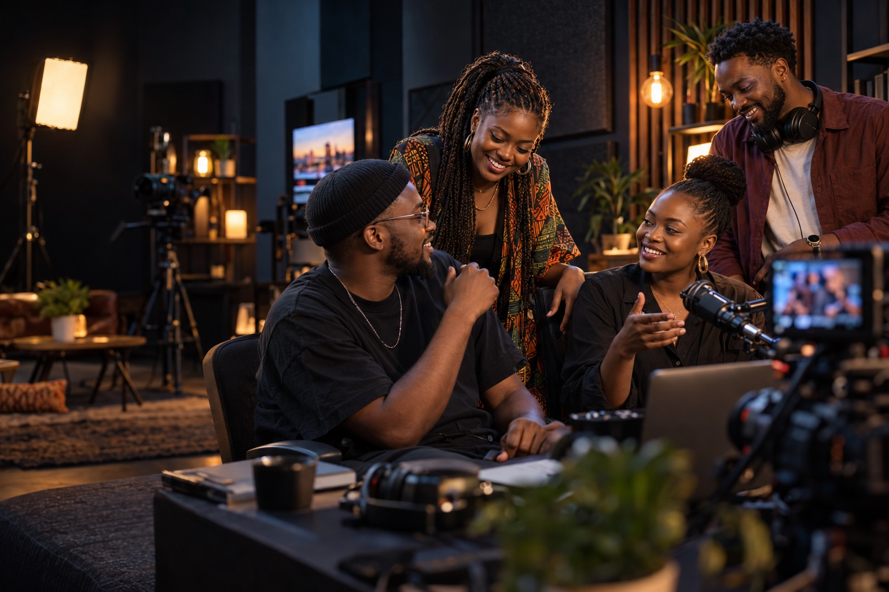
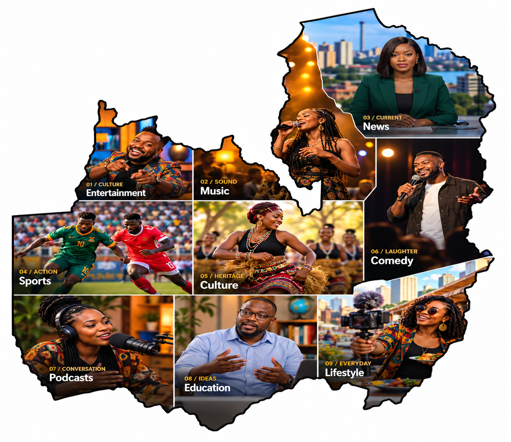

Create
Build and share the content you care about.

Built in Zambia. Made for local content.
Discover, watch and support the creators and broadcasters shaping Zambia’s digital content future.
A new home for local stories
Zambian creators and broadcasters are making valuable content and building audiences. ZedPlus is being built to help local content reach more people and create more direct ways to grow and earn.
Build and share the content you care about.
Reach audiences who want to discover local voices.
Explore monetisation opportunities for eligible content and platform programmes.
The ZedPlus ecosystem
Bringing discovery, publishing and digital distribution into one locally focused experience for viewers, creators and broadcasters.
Discover Zambian shows, entertainment, news, culture, education, podcasts and more.
Explore the viewer experiencePublish your work, build a community and give your audience a place to find what’s new.
For creatorsExtend broadcast programming with digital distribution for audiences wherever they are.
For broadcastersExplore monetisation opportunities for creators and broadcasters through eligible content and programmes.
See how it worksFor the people creating what’s next
Your audience is valuable. Your content is valuable. ZedPlus is building the platform to help you turn both into opportunity.
Earnings are not guaranteed. Monetisation depends on eligible content and platform programmes.
Apply as a CreatorFor broadcasters and media houses
Extend your TV, radio or digital programming to audiences wherever they are, with a new way to distribute local content.
A window into Zambia
Explore the stories, sounds and perspectives that make up our local content scene.
Explore ZedPlus
Illustrative imagery. Content and availability will depend on participating creators and broadcasters.
Your next story is close
Join the experience as ZedPlus brings creators, broadcasters and viewers together.
Create your ZedPlus account.
Find content and creators you love.
Choose the content experience that works for you.
Enjoy local content while supporting Zambia’s creators and broadcasters.
Rooted here. Ready for what’s next.
ZedPlus is a Zambian digital content and streaming platform connecting creators, broadcasters and audiences around local stories.
Zambian content is at the heart of the platform.
Designed around the needs of creators and broadcasters.
Helping local content move confidently into the digital economy.
Connecting creators, broadcasters and audiences.
The next story starts here
Join the community of creators, broadcasters and viewers building Zambia’s digital content ecosystem.